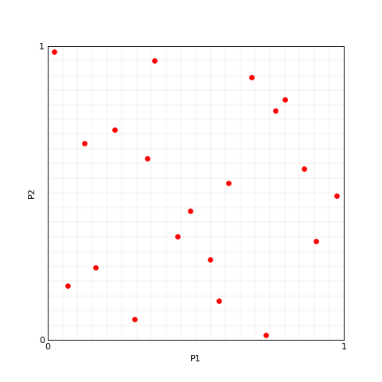
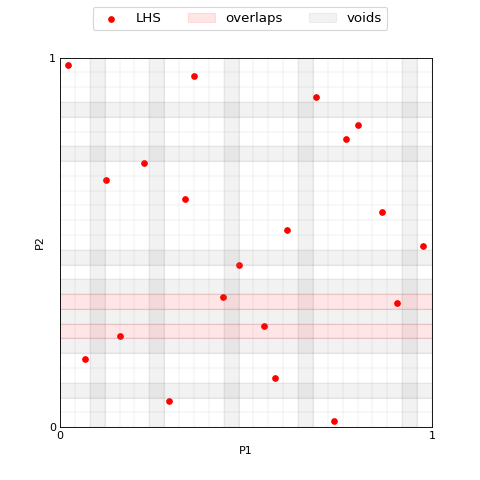
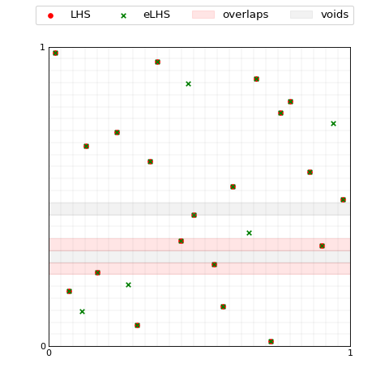

Examples
`This Jupyter Notebook <>`__ aims at showing the properties of the
expandLHS module.
>>> import numpy as np
>>> import matplotlib.pyplot as plt
>>> from scipy.stats.qmc import LatinHypercube
>>> # the following import ensure to load the latest version of the module
>>> # the user should install the module and then import it as usual
>>> from importlib.machinery import SourceFileLoader
>>> expandLHS = SourceFileLoader("expandLHS", "../expandLHS/expandLHS.py").load_module()
>>> from expandLHS import ExpandLHS
>>> import plotter
Matplotlib is building the font cache; this may take a moment.
Sample a Latin Hypercube
Let’s start sampling a random Latin Hypercube as implemented in Scipy.stats.qmc.LatinHypercube.
>>> N = 20 # number of samples
>>> P = 2 # number of dimensions
>>>
>>> lhs_sampler = LatinHypercube(P)
>>> lhs_set = lhs_sampler.random(N)
>>>
>>> plotter.plot(lhs_set, M=0, x_label='P1', y_label='P2')
(<Figure size 600x600 with 1 Axes>, <Axes: xlabel='P1', ylabel='P2'>)
{kind=link}
{kind=link}

Expand the Latin Hypercube
ExpandLHS.regridding.ExpandLHS.count_samples comput the number of samples in
each interval for each dimension.>>> M = 5 # number of samples to add
>>>
>>> eLHS = ExpandLHS(lhs_set)
>>> voids = eLHS.regridding(M)
>>> overlaps = eLHS.count_samples(M)
>>>
>>> #the plot function internally compute both voids and overlaps
>>> plotter.plot(lhs_set, M=M, labels='LHS', voids=voids, overlaps=overlaps, x_label='P1', y_label='P2')
(<Figure size 600x600 with 1 Axes>, <Axes: xlabel='P1', ylabel='P2'>)
{kind=link}
{kind=link}

Then, is it possible to perform the expansion by ExpandLHS.__call__
>>> lhs_set_expanded = eLHS(M)
>>> voids = eLHS.regridding(0, samples=lhs_set_expanded) #recompute voids on the expanded set
>>>
>>> plotter.plot([lhs_set, lhs_set_expanded], M=0, labels=['LHS', 'eLHS'], \
... colors=['red', 'green'], markers=['o', 'x'], sizes=[25, 25], \
... index = 1, voids=voids, overlaps=overlaps)
(<Figure size 600x600 with 1 Axes>, <Axes: >)
{kind=link}
{kind=link}

Degree of an expansion
ExpandLHS.degree.>>> degree = eLHS.degree(M)
>>> print(f'degree-of-LHS = {degree:.3f}')
degree-of-LHS = 0.880
Using the method ExpandLHS.optimal_expansion it is possible to
compute the degree-of-LHS for different expansion sizes in a given
interval.
>>> expansions = eLHS.optimal_expansion((4, 9), verbose=True)
>>> print(f'List of expansions sorted by the corresponding degree:')
>>> for expansion in expansions:
... print(expansion)
List of expansions sorted by the corresponding degree: (0, 1.0) (6, 0.9615384615384616) (7, 0.9259259259259259) (8, 0.9107142857142857) (4, 0.8958333333333334) (5, 0.88) (9, 0.8793103448275862)
Optimized expansion
>>> from scipy.stats.qmc import discrepancy
>>>
>>> N = 100
>>> P = 6
>>> M = 92
>>>
>>> lhs_sampler = LatinHypercube(P)
>>> lhs_set = lhs_sampler.random(N)
>>> lhs_sampler_opt = LatinHypercube(P, optimization='random-cd')
>>> lhs_set_opt = lhs_sampler_opt.random(N)
>>>
>>> print(f'Discrepancy of LHS without optimization: {discrepancy(lhs_set):.4f}')
>>> print(f'Discrepancy of LHS with optimization: {discrepancy(lhs_set_opt):.4f}')
Discrepancy of LHS without optimization: 0.0063 Discrepancy of LHS with optimization: 0.0024
When using ExpandLHS.__call__ is it possible to ask for an optimized
expansion with the keyword optimize=, where the available metrics
are: - discrepancy (Scipy.stats.qmc.discrepancy) - geometric discrepancy
(Scipy.stats.qmc.geometric_discrepancy)
>>> lhs_set_expanded_opt = eLHS(M, optimize='discrepancy')
>>>
>>> print(f'Discrepancy of eLHS without optimization: {discrepancy(lhs_set_expanded):.4f}')
>>> print(f'Discrepancy of eLHS with optimization: {discrepancy(lhs_set_expanded_opt):.4f}')
Discrepancy of eLHS without optimization: 0.0023 Discrepancy of eLHS with optimization: 0.0002